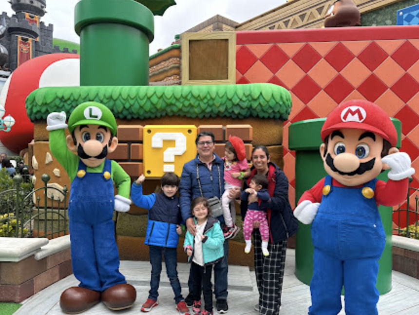
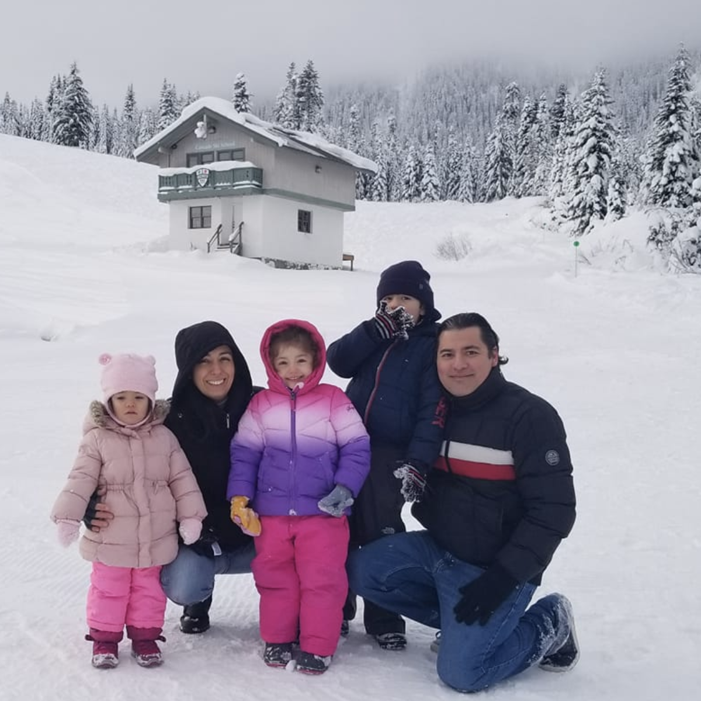
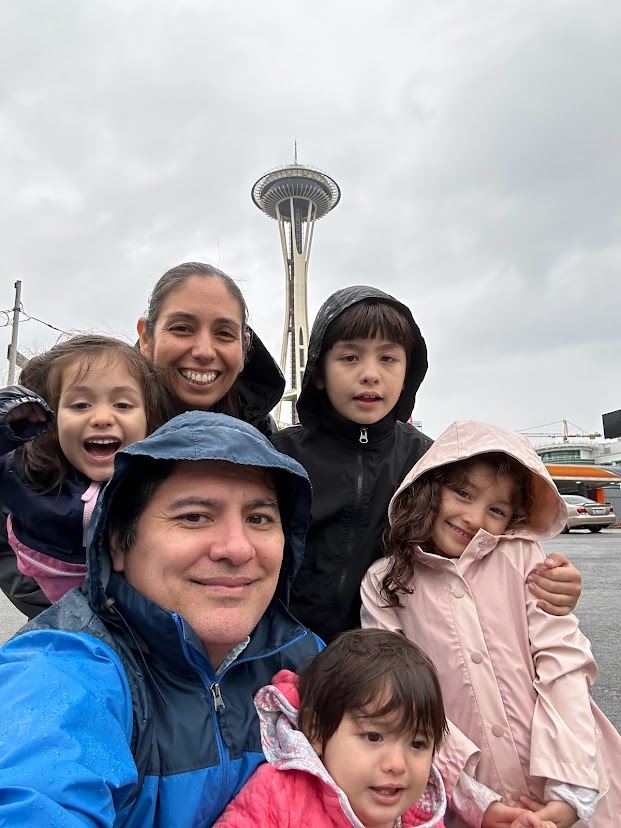

The Journey



Senior Quality Engineer with 15+ years of experience working on quality strategy, test automation, and delivery across web, mobile, APIs, cloud, and IoT platforms.
Beyond the Code
Career Highlights
Leading test automation and quality practices for IoT products. Developing and maintaining automated test scripts, integrating tests into CI/CD pipelines, and collaborating with distributed cross-functional teams.
Led QA strategy and test automation for Varis digital B2B platform, overseeing manual and automated testing as SDET, guiding UI automation frameworks (POM), integrating tests into CI/CD pipelines, and validating APIs.
Client:
Supported leading US clients in telecommunications and social media sectors. Worked on Android devices, web applications, AR/VR, and wearable products. Delivered and evolved test automation frameworks using Python with Pytest, integrated tests into CI/CD pipelines, and applied Selenium for UI automation.
International Speaker
Sharing knowledge and practical approaches at conferences across US, Mexico, and Asia
Explored the QAE/SDET journey, focusing on QA strategy, automation testing for web & Android apps, POM, DevOps, and cloud tools. My first international talk in Asia!
Presented a Python-based automation framework for end-to-end testing of Alexa wake word detection under different acoustic conditions with Mobica QA team.
Watch TalkPresented test automation challenges and strategies for Android TV applications. Led technical direction, defined demo scope, while mentoring the engineering team.
Deep dive into creating a simple and efficient test automation framework with TestCafe for end-to-end web testing.
PNSQC Conference ArchiveIntroduced UP Automation Framework, an Android open-source project developed with AI engineering students at Universidad Panamericana campus Aguascalientes.
PNSQC Conference ArchiveShared experience in automating mobile app testing using STF (Smartphone Test Farm), improving QA efficiency and device coverage.
PNSQC Conference Archive🎤 More Talks: 10+ conference presentations across US, Mexico, and Asia on test automation, mobile testing, and quality engineering. Connect on LinkedIn for full speaking history.
Projects & Open-Source
🌐 Matter (Project CHIP)
Open-Source Contributor
Contributing to Matter (Project CHIP), the major open-source project for IoT, connected devices, and smart home platforms. Working with a distributed open-source community on test plans, quality practices, and testing within the Matter ecosystem.
View on GitHub🎮 Unity 2D Game
A Father's Gift
Created a fun 2D endless runner game in Unity for my son's 7th birthday. This passion project earned 3rd place at the 2024 State Innovation & Game Development Program (INCYTEA, Aguascalientes).
Play the Game🎓 Education & Mentorship
- University Lecturer - Universidad Panamericana & Universidad Tecnológica de Aguascalientes (Software Quality Assurance, Project Management, Development Methodologies)
- LEGO Robotics Instructor - Volunteer STEAM program mentor for elementary & middle school students
- UW Advisory Board - Member of University of Washington Software Testing Advisory Board
Creative Family

Click to watch on YouTube
🎵 Baby Monster Song
Written & Performed by Juan and His Sisters
Beyond engineering and technology, what truly matters is family. I'm incredibly proud to share a song my son Juan wrote and sang with his sisters, produced by Tore.